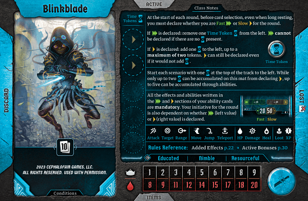
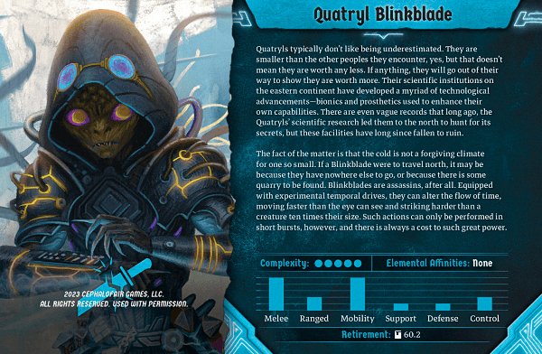

|  |  |
Quatryls typically don't like being underestimated. They are smaller than the other peoples they encounter, yes, but that doesn't mean they are worth any less. If anything, they will go out of their way to show they are worth more. Their scientific institutions on the eastern continent have developed a myriad of technological advancements--bionics and prosthetics used to enhance their own capabilities. There are even vague records that long ago, the Quatryls' scientific research led them to the north to hunt for its secrets, but those facilities have long since fallen to ruin.
The fact of the matter is that the cold is not a forgiving climate for one so small. If a Blinkblade were to travel north, it may be because they have nowhere else to go, or because there is some quarry to be found. Blinkblades are assassins, after all. Equipped with experimental temporal drives, they can alter the flow of time, moving faster than the eye can see and striking harder than a creature ten times their size. Such actions can only be performed in short bursts, however, and there is always a cost to such great power.